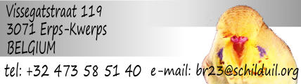
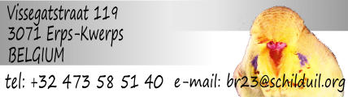

Show resultaten
Kijk op de SBR partnership show resultaten voor recente resultaten.
Alle resultaten
Klik op de data hieronder om naar die show te gaan en de BR23 resultaten te zien
24/5/2014 17/5/2014 18/4/2014 5/4/2014 7/3/2014
31/8/2013 9/6/2013 11/5/2013 28/4/2013 19/4/2013 14/4/2013 15/3/2013 27/1/2013 13/1/2013
25/8/2012 19/5/2012 16/3/2012 11/3/2012 28/1/2012 22/1/2012
17/12/2011 4/12/2011 27/11/2011 13/11/2011 27/8/2011 22/5/2011 15/4/2011 9/4/2011 20/3/2011 18/3/2011 27/2/2011
Enkele geselecteerde shows
31/8/201331 augustus 2013 - BGC: Belgian Budgerigar Club Belgisch Kampioenschap
Beginners - Groep 11: Beste jonge andere kleur (fallow, ...): 437
Beginners - Groep 24: Beste overjarig cinnamon: (131GAOC)302
Beginners - Groep 31: Beste overjarig andere kleur (fallow, ...): ...
Beginners - Groep 27: Beste tegengeslacht overjarig dominant bont: ...
Beginners - Groep 30: Beste tegengeslacht overjarig Deens bont/clearbody: (GER280)298
Beginners - Reeks 4: Jonge grijze man
- Plaats 2 van 4: (WDGIBVA)403
- Plaats 3 van 4: (WDGIBVA)410
- Plaats 4 van 4: (WDGIBVA)427
Beginners - Reeks 21: Jonge man, andere kleuren (fallow, ...)
Beginners - Reeks 107: Jonge cinnamon pop, groen reeks
- Reekswinnaar (3 in reeks): (WDGPC280)406
Beginners - Reeks 203: Overjarige blauwe man (incl. geelmasker)
- Plaats 6 van 6: (AC62)136
Beginners - Reeks 207: Overjarige cinnamon man, groen reeks
- Plaats 4 van 5: ...
Beginners - Reeks 208: Overjarige cinnamon man, groen reeks (incl. geelmasker)
- Reekswinnaar (4 in reeks): (131GAOC)302
- Plaats 2 van 4: (...)336
Beginners - Reeks 213: Overjarige dominant pied man, groen reeks
- Reekswinnaar (1 in reeks): ...
Beginners - Reeks 215: Overjarige mauve, olijfgroen, violet man
- Plaats 5 van 5: ()331
Beginners - Reeks 221: Overjarige man, andere kleuren (fallow, ...)
- Reekswinnaar (1 in reeks): (...)383
Beginners - Reeks 303: Overjarige blauwe pop
- Plaats 2 van 2: (AC133)185
Beginners - Reeks 319: Overjarige Deens bonte pop
- Reekswinnaar (1 in reeks): (GER280)298
25/8/2012
25 augustus 2012 - BGC: Belgian Budgerigar Club Belgisch Kampioenschap
Beste Overjarige Man Beginner In Show: (131GAOC)298
Beginners - Groep 23: Beste overjarige opaline (incl. cinnamon): (131GAOC)298
Beginners - Groep 32: Beste overjarig koppel: (131GAOC)302 (AC62)133
Beginners - Groep 10: Beste jong tegengeslacht recessief bont/clearbody:
Beginners - Group 22: Beste overjarig tegengeslacht hemelsblauw/kobalt/grijs normaal: (AC133)185
Beginners - Reeks 7: Jong groen cinnamon man
- Plaats 3 van 3: ...
Beginners - Reeks 8: Jong blauw cinnamon man
- Plaats 2 van 3: ...
Beginners - Reeks 13: Jong dominant bont man
Beginners - Reeks 19: Jong recessief bont man
- Plaats 2 van 2: ...
Beginners - Reeks 119: Jong recessief bont pop
- Reekswinnaar (1 in reeks): ...
Beginners - Reeks 21: Jong alle niet genoemde kleuren (slate, fallow, ...) man
- Reekswinnaar (1 in reeks): ...
Beginners - Reeks 121: Jong alle niet genoemde kleuren (slate, fallow, ...) pop
- Reekswinnaar (1 in reeks): ...
Beginners - Reeks 201: Overjarig licht & donkergroen man
Beginners - Reeks 301: Overjarig licht & donkergroen pop
- Reekswinnaar (1 in reeks): (AC110)280
Beginners - Reeks 303: Overjarig hemelsblauw & kobalt pop
- Plaats 2 van 2: (AC133)185
Beginners - Reeks 206: Overjarig opaline cinnamon man
- Reekswinnaar (1 in reeks): (131GAOC)298
Beginners - Reeks 306: Overjarig opaline cinnamon pop
- Plaats 2 van 2: ...
Beginners - Reeks 309: Overjarig ino pop
- Plaats 2 van 2: (48144)287
Beginners - Reeks 214: Overjarig dominant bont man
- Plaats 3 van 3: ...
Beginners - Reeks 240: Overjarig koppel
- Reekswinnaar (1 in reeks): (131GAOC)302 (AC62)133
27/8/2011
27 augustus 2011 - BGC Brabant & Limburg Internationale Regioshow
Beste Jonge Man Beginner In Show: (131GAOC)298
Beginners - Groep 1: Beste jonge licht/donker/grijs groen: (AC110)276
Beginners - Groep 2: Beste jonge hemelsblauw/kobalt/grijs: (131GAOC)303
Beginners - Groep 3: Beste jonge opaline (incl. cinnamon): (131GAOC)298
Beginners - Groep 4: Beste jonge cinnamon: (AC112)286
Beginners - Groep 5: Beste jonge tegengeslacht ino: (480144)287
Beginners - Reeks 1: jonge mannen - licht en donker groen
- Reekswinnaar (7 in reeks): (AC110)276
Beginners - Reeks 3: jonge mannen - hemelsblauw en kobalt (incl. geelmasker)
- Reekswinnaar (3 in reeks): (131GAOC)303
Beginners - Reeks 6: jonge mannen - opaline-cinnamon
- Reekswinnaar (1 in reeks): (131GAOC)298
Beginners - Reeks 7: jonge mannen - groen cinnamon
- Reekswinnaar (1 in reeks): (164133)282
Beginners - Reeks 107: jonge poppen - groen cinnamon
- Reekswinnaar (1 in reeks): 2011/299
Beginners - Reeks 8: jonge mannen - blauw cinnamon (incl. geelmasker)
- Reekswinnaar (4 in reeks): (AC112)286
- Plaats 2 van 4: (131GAOC)302
- Plaats 3 van 4: (136061)265
Beginners - Reeks 108: jonge poppen - blauw cinnamon (incl. geelmasker)
- Plaats 2 van 2: 2011/309
Beginners - Reeks 109: jonge poppen - ino
- Reekswinnaar (1 in reeks): (480144)287
Beginners - Reeks 203: oude mannen - hemelsblauw en cobalt (incl. geelmasker)
- Plaats 3 van 3: (AC62)136
Beginners - Reeks 308: oude poppen - blauw cinnamon (incl. geelmasker)
- Reekswinnaar (1 in reeks): (AC62)133
Beginners - Reeks 214: oude poppen - blauw dominant bont (incl. geelmasker)
- Plaats 2 van 2: (MC67)167
21/8/2010
21 augustus 2010 - BGC Brabant & Limburg 6e Internationale Open Clubshow
Beginners - Reeks 3: Jonge mannen - hemelsblauw en kobalt normaal
- Plaats 3 van 5: (AC62)136
Beginners - Reeks 207: Overjarige mannen - alle groen cinnamons
- Plaats 5 van 5: (AC62)111
Beginners - Reeks 309: Overjarige poppen - lutino en albino
- Plaats 2 van 2: (GOGG)7
Beginners - Reeks 215: Overjarige mannen - violet, mauve en olijfgroen
- Plaats 3 van 4: (MCMC)13
http://